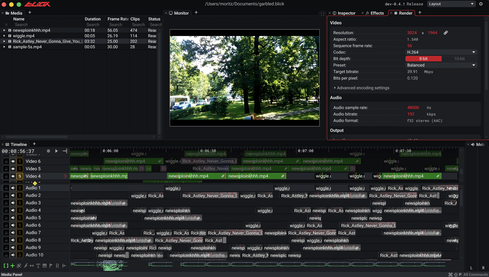

Ein schlanker Videoeditor mit einem Renderer für eine umfangreiche, interaktive Oberfläche.
In einem kleinen Team arbeite ich an den zentralen UI- und Rendering-Systemen von Blick, einem plattformübergreifenden nichtlinearen Videoeditor mit Immediate-Mode-Oberfläche.
- Ein auf Compute-Shadern basierender, gekachelter Renderer, der vorzeichenbehaftete Distanzfelder (SDFs) auf der GPU auswertet.
- Eine kleine Rendering-Sprache, die im Shader interpretiert wird und die Rendering-Logik auf der CPU auf ein Minimum beschränkt.
- Rendering-Caches, die unveränderte Ergebnisse wiederverwenden. Energieeffizienz ist dabei ein Entwurfsziel.
